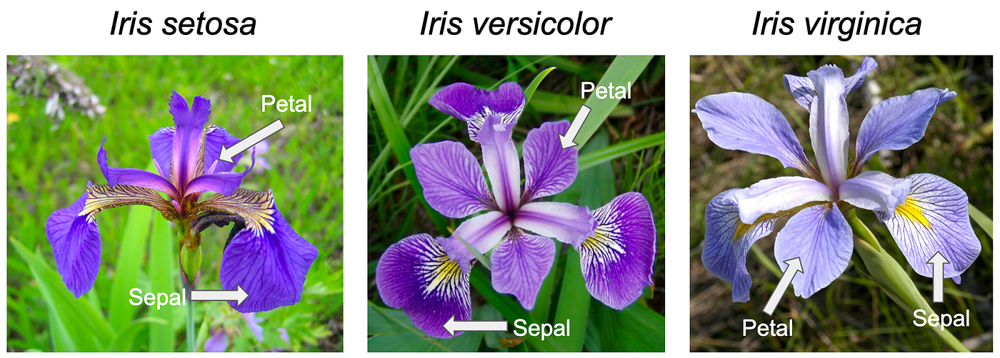

Introduction to R: A Beginner’s Guide
Table of Contents
- Who This Guide Is For
- Why R?
- Installing R
- Your First R Commands
- Choosing an IDE
- R Packages
- Working Directories
- Mini Project: Your First Data Analysis
- Troubleshooting
- Getting Help
Who This Guide Is For
This tutorial is for anyone who is new to R and wants to get up and running quickly — no prior programming experience required. By the end, you will have R installed, know how to run basic commands, and have completed a simple data analysis project using real data.
Why R?
R has become the dominant language in bioinformatics for a number of reasons. It was designed from the ground up for statistical computing, which means many of the operations central to biological data analysis are either built in or available through mature, well-tested packages. The Bioconductor ecosystem alone offers over 2,000 packages specifically for genomic and high-throughput data, including tools like DESeq2, edgeR, and Seurat that have no direct equivalents elsewhere. While Python is a capable general-purpose language and has strong libraries for machine learning and data manipulation, it was not built with statistics or biology in mind — so tasks that take a single line in R can require importing multiple libraries and writing considerably more code to achieve the same result. R also handles the kinds of data structures common in biology (data frames with mixed types, factor variables, formula notation for statistical models) more naturally than Python does out of the box. For researchers whose primary goal is analysis rather than software development, R’s conciseness and its deep integration with statistical methodology make it the more practical choice.
Installing R
R is a free (as in freedom!), open-source environment for statistical computing and graphics. It runs on Windows, macOS, and Linux.
The R environment is a fully planned and coherent system, rather than an incremental accretion of very specific and inflexible tools, as is frequently the case with other data analysis software (e.g. GraphPad Prism, IBM SPSS).
Download R from the Comprehensive R Archive Network (CRAN), which hosts up-to-date versions of R and its documentation:
Once installed, you can launch R from the command line (Linux/macOS) or open the R application on Windows. However, most users work with an Integrated Development Environment (IDE) rather than the base interface — more on that in the Choosing an IDE section.
Choosing an Integrated Development Environment (IDE)
While R comes with a basic graphical interface, most users find a dedicated IDE much more productive. Here are the two most popular options.
RStudio
RStudio is the most widely used IDE for R and the usual choice for beginners. Its interface is organized into four panes:
- Source — write and save your R scripts here
- Console — run commands interactively
- Environment — see the variables and data you’ve created
- Output — view plots, tables, files, and help documentation

You can run code line by line with Ctrl + Enter, or run the entire script using the Source button in the top-right of the Source pane. Detailed guides are available at docs.posit.co.
Positron
Positron is a newer IDE from the same team that built RStudio. It is built on the open-source foundation of Visual Studio Code (Code OSS) and is a good fit if you:
- work with multiple languages (Python, R, Bash, Quarto, etc.)
- want access to the VS Code extensions marketplace
- prefer a more customizable environment
For beginners focused on R, RStudio is perfectly sufficient. Positron becomes more appealing as your work expands to other languages or tools. However, some data analysis features of Positron makes it even better than RStudio.

Your First R Commands
Once R is installed, open it and try the following commands to get comfortable with the basics.
Basic Arithmetic
R works like a calculator. Type a command after the > prompt and press Enter:
> 2 + 2
[1] 4
> 10 * 5
[1] 50
> 100 / 4
[1] 25The [1] before the result is R’s way of labeling the first element of the output — you can ignore it for now.
Storing Values in Objects
You can save values using the assignment operator <- and reuse them later:
a <- 2 + 2 # stores 4
b <- 5 * 2 # stores 10
c <- 12 / 3 # stores 4Call the variable name to print its value:
> a
[1] 4
> a + b + c
[1] 18
> a - b
[1] -6Working with Vectors
A vector is a sequence of values — one of R’s most fundamental data structures:
# Create a vector of numbers
ages <- c(23, 35, 42, 28, 19)
# Compute summary statistics
mean(ages) # average
median(ages) # middle value
sum(ages) # totalSaving and Running Scripts
Instead of typing commands one by one, you can save them in a script — a plain text file with the .R extension. To run a script from the command line:
Rscript my_script.RIn an IDE, you can run a script line by line with Ctrl + Enter (Cmd + Enter in Mac), or all at once using the Source button.
R Packages
R’s functionality can be extended with packages — collections of functions, data, and documentation contributed by the community. There are thousands available!
Installing from CRAN
CRAN is the main repository for R packages. Install a package with:
install.packages("ggplot2") # a popular data visualization packageYou only need to install a package once. To use it in a session, load it with library():
library(ggplot2)Installing from Bioconductor
Packages for bioinformatics are typically hosted on Bioconductor rather than CRAN. To install them, first install the BiocManager package:
install.packages("BiocManager")Then use it to install Bioconductor packages:
BiocManager::install("GenomicFeatures")The :: notation specifies which package a function comes from — useful when two loaded packages share a function name.
For this workshop, install the following packages:
install.packages(c(
"ggplot2",
"readr",
"forcats",
"ggsignif",
"ggpattern"
))Working Directories
When R reads or writes a file, it needs to know where to look. That location is called the working directory — the folder R treats as its home base for the current session.
Checking and Setting the Working Directory
To see your current working directory:
getwd()
# e.g. "/home/username/projects/my_analysis"To change it:
setwd("/home/username/projects/my_analysis")On Windows, use forward slashes or double backslashes in paths:
setwd("C:/Users/username/projects/my_analysis") # ✅
setwd("C:\\Users\\username\\projects\\my_analysis") # also ✅
setwd("C:\Users\username\projects\my_analysis") # ❌ single backslashes don't workAbsolute vs. Relative Paths
A absolute path gives the full location from the root of the file system:
read.csv("/home/username/projects/my_analysis/data/proliferation.csv")A relative path is defined relative to the current working directory. If your working directory is already /home/username/projects/my_analysis, you can write:
read.csv("data/proliferation.csv") # looks inside the working directoryThis matters a lot in practice. Suppose your project is laid out like this:
my_analysis/
├── data/
│ └── proliferation.csv
├── docs/
│ └── report.Rmd
└── analysis.RIf you start R inside my_analysis/, use:
read.csv("data/proliferation.csv")If you start R inside my_analysis/docs/, use:
read.csv("../data/proliferation.csv") # .. means "go up one folder"The .. notation steps up one level in the directory tree. You can chain them: ../../ goes up two levels, and so on.
Recommended Practice: Use RStudio Projects or Open a Folder in Positron
Manually calling setwd() at the top of every script is fragile — the path will break on anyone else’s machine (or your own, if you move the folder). Both RStudio and Positron offer better alternatives.
In RStudio, use Projects (.Rproj files). When you open a project, RStudio automatically sets the working directory to the project root, so all relative paths in your scripts work consistently for everyone who opens it. To create one: File → New Project.
In Positron, the working directory is tied to the folder you have open in the Explorer panel — the same model used by VS Code and other editors built on Code OSS. When you open a folder (File → Open Folder…), Positron sets that folder as the workspace root, and R sessions started from within it will use it as the working directory. You don’t need a special project file; the open folder is the project. This makes it straightforward to work across multiple languages in the same folder without any extra configuration.
As a rule of thumb: always use relative paths in your scripts, and let your IDE handle where the root is — whether that’s an .Rproj file in RStudio or an open folder in Positron.
Mini Project: Your First Data Analysis
Let’s put everything together with a short end-to-end analysis using the built-in iris dataset. Collected by botanist Edgar Anderson in 1935 and made famous by statistician Ronald Fisher, it contains measurements (in centimeters) of sepal length, sepal width, petal length, and petal width for 150 flowers across three species of the genus Iris: setosa, versicolor, and virginica. It’s one of the most widely used datasets in data science and comes built into R — no downloading required.

Step 1: Explore the Data
A good way of starting to explore the data is using the str() function from the utils package that comes with base R and it is automatically loaded when you start a session.
str(iris)
'data.frame': 150 obs. of 5 variables:
$ Sepal.Length: num 5.1 4.9 4.7 4.6 5 5.4 4.6 5 4.4 4.9 ...
$ Sepal.Width : num 3.5 3 3.2 3.1 3.6 3.9 3.4 3.4 2.9 3.1 ...
$ Petal.Length: num 1.4 1.4 1.3 1.5 1.4 1.7 1.4 1.5 1.4 1.5 ...
$ Petal.Width : num 0.2 0.2 0.2 0.2 0.2 0.4 0.3 0.2 0.2 0.1 ...
$ Species : Factor w/ 3 levels "setosa","versicolor",..: 1 1 1 1 1 1 1 1 1 1 ...The $ operator in R is used to extract a named element from a list or data frame.
Here you can observe the object internal structure. In this case, the iris object is a data frame with 5 variables. The first four variables are numeric, and the iris$Species is a factor with 3 levels, corresponding to the 3 Iris species. This is important to check, because some functions only work with specific types of data.
For example, ggplot(data =) will expect a data.frame as input.
Other basic functions useful for data exploration:
# View the first few rows
head(iris)
# Get a summary of all variables
summary(iris)
# Check the dimensions (rows x columns)
dim(iris) # 150 rows, 5 columns
# See the three species
levels(iris$Species)Step 2: Compute Summary Statistics
# Average petal length across all flowers
mean(iris$Petal.Length)
# Average petal length per species
tapply(iris$Petal.Length, iris$Species, mean)
# Correlation between petal length and petal width
cor(iris$Petal.Length, iris$Petal.Width)
# Histogram of petal length
hist(iris$Petal.Length)You should find a strong positive correlation (~0.96) — flowers with longer petals also tend to have wider petals.
Step 3: Visualize the Data
Install and load ggplot2 if you haven’t already:
install.packages("ggplot2")
library(ggplot2)Create a scatter plot of petal length vs. petal width, colored by species:
ggplot(iris, aes(x = Petal.Length, y = Petal.Width, color = Species)) +
geom_point(size = 3, alpha = 0.8) +
labs(
title = "Iris Petal Dimensions by Species",
x = "Petal Length (cm)",
y = "Petal Width (cm)"
) +
theme_minimal()The plot will show three well-separated clusters — setosa flowers are notably smaller, while versicolor and virginica overlap somewhat. This visual separation is why the iris dataset is so often used to demonstrate classification techniques.
Step 4: Save Your Script
Save all of the above commands in a file called iris_analysis.R and run it with:
Rscript iris_analysis.R # if you use Linux/macOSor open the script in Rstudio/Positron and click the Source button.
Congratulations — you’ve completed your first R data analysis!
Troubleshooting
R won’t install on my machine. Make sure you’re downloading the correct version for your operating system from CRAN. On macOS, you may need to allow the installer in System Settings → Privacy & Security.
install.packages() fails with a permissions error. Try running R as an administrator (Windows) or use sudo on Linux. Alternatively, install to a personal library by running install.packages("pkg", lib = "~/R/library").
A package loads but I get a “function not found” error. You may have forgotten to call library(packagename) at the start of your script. Installation and loading are two separate steps.
My plot doesn’t appear. In RStudio, plots appear in the Output pane. If using the terminal, call dev.off() after saving a plot to a file with png() or pdf().
I get a warning about package versions. Warnings (as opposed to errors) generally don’t stop your code from running. Check whether your output looks correct — if it does, you can usually proceed. Update packages with update.packages().
🚫 Common Beginner Mistakes
Forgetting Quotes
Wrong:
install.packages(ggplot2)Correct:
install.packages("ggplot2")Case Sensitivity
Mean(height) # ❌
mean(height) # ✅R is case-sensitive.
Getting Help
R has extensive built-in documentation. To look up any function, use ? followed by the function name:
?mean # documentation for the mean() function
?ggplot # documentation for ggplot()
help.start() # opens a browser-based help indexTo search across all installed packages:
??regression # finds all help pages mentioning "regression"Beyond the built-in docs, the R community is very active. Useful resources include:
- Stack Overflow (R tag) — for specific coding questions
- R for Data Science (free book) — a thorough, beginner-friendly introduction
- CRAN Task Views — curated package lists by topic
- Posit Community Forum — for RStudio and tidyverse questions
Got a question? The most popular LLMs can handle everything from quick lookups to complex problems.
Be aware of allucinations, though. Always double-check your code and test to see if the results are accurate.
- Claude (Anthropic) — claude.ai
- ChatGPT (OpenAI) — chatgpt.com
- Gemini (Google) — gemini.google.com
- Copilot (Microsoft) — copilot.microsoft.com
- Llama (Meta, open-source) — llama.meta.com
- Mistral (Mistral AI, open-source) — mistral.ai